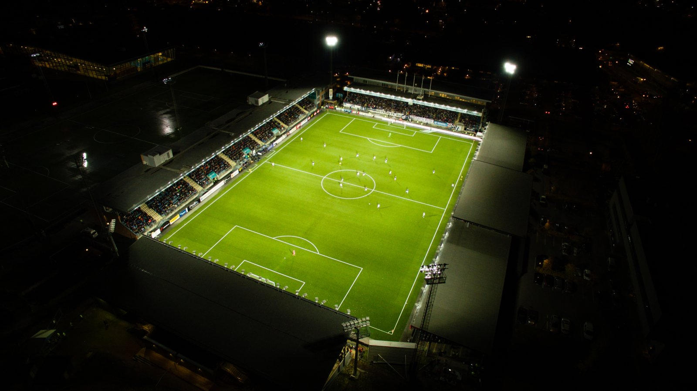

Stadion
Strømsgodset sin hjemmebane heter Marienlyst, den ligger i Drammen og har plass til 8935 personer. Banen ble åpnet i 1924 og ble hjemmebanen til Strømsgodset i 1967. Marienlyst kan også bli kalt gamle gress, og selve gressmatten ble lagt i 2008. Adressen til Stadionen er Knoffsgate 6 og eies av Drammen kommune
Legender
Øyvind Leonhardsen
Øyvind Leonhardsen ble født den 17. august 1970, og innledet sin aktive fotballkarriere i klubben Clausenengen i hjembyen Kristiansund på vestlandet. Som ung og lovende midtbanespiller ble Leo tidlig oppdaget. Alt i 1989 ble han hentet til toppklubben Molde FK, hvor han raskt etablerte seg i startoppstillingen på både klubblag og aldersbestemte landslag
Jostein Flo
Fotballkarrieren ble innledet på aldersbestemte lag for Stryn hvor han umiddelbart gjorde seg bemerket som en pålitelig målscorer. Etter å gått gradene i moderklubben og etablert seg på a-laget ble han hentet til Molde før 1987-sesongen. I Rosenes by var Jostein med på å forvandle et lag som i flere sesonger hadde vært en anonym middelhavsfarer til et topplag, som til slutt endte på sølvplass bak Nils Arne Eggens Moss. Den samme sesongen ble han også tatt ut på landslaget for første gang i karrieren. Han scoret i debuten med flagget på brystet, men ble raskt skjøvet ut i kulden etter at Tord Grip tok over som landslagssjef.
Steinar Pettersen
Mannen som etter hvert ble døpt både Mr. Fotball og Mr. Strømsgodset av pressen kom til verden 29. april 1945, og vokste opp på Gulskogen sammen med resten av guttegjengen som 15-20 år senere skulle sette Strømsgodset på fotballkartet. De fleste av guttene gikk sammen på Rødskog skole og veien til ”Banen” var kort. Dette førte naturligvis til at mang en skoledag ble avsluttet med en fotballkamp eller tre før guttene satte kursen hjemover. – Det ble til tider lite skole og mye fotball og bandy. Vi var en ren gutteklasse på 30 elever som fulgte hverandre oppover fra lilleputt-klassen, forteller hovedpersonen.
Topscorere gjenom historien
| Spiller | Mål | Periode |
|---|---|---|
| Steinar Pettersen | 220 | 1962-1975 |
| Thorodd Presberg | 124 | 1963-1973 |
| Jostein Flo | 120 | 1996-2002 |
| Per Åge Nyberg | 105 | 1948-54, 1956-62 |
| Ingar Pettersen | 101 | 1966-1980 |
Ledelse
Hovedtrener: Bjørn Petter Ingebritsen
Sportsjef: Jostein Flo
Assistenttrener: Marin Foyston
Assistenttrener: Håkon Wibe Lund
Klubbens Historie
Strømsgodset idrettsforening ble stiftet i 1907, de går ofte under navnet Godset eller De Marineblå. Årets sesong endte med en 13. plass og NM sølv. De hadde også et budsjett på 91 millioner dette året